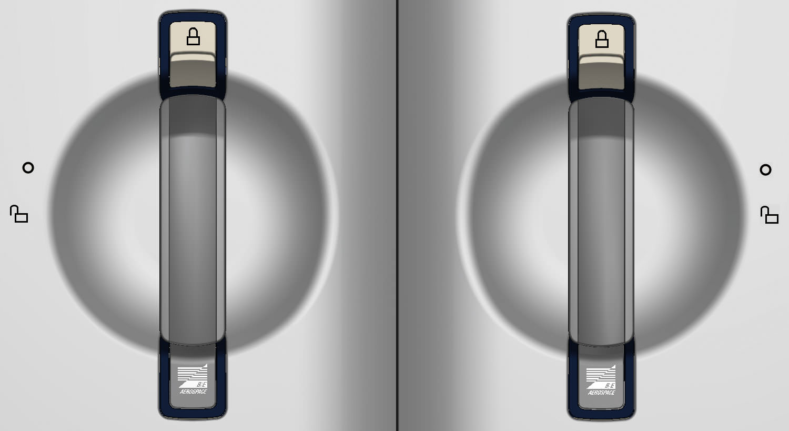
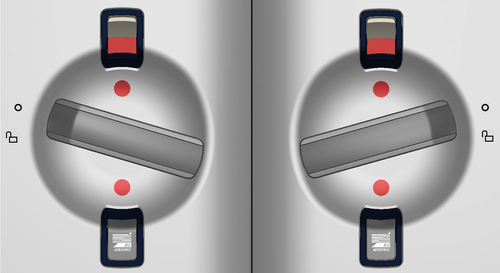
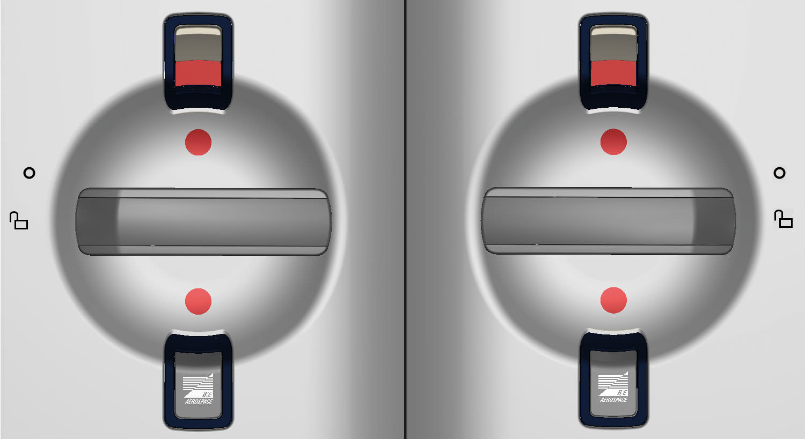

ESSENCE® BUN WARMER
ESSENCE® BUN WARMER
DOOR OPERATIONS
HOW TO OPEN THE DOOR

LH - CLOSE/LOCK POSITION
RH - CLOSE/LOCK POSITION
Slide the secondary latch to the upper position.

LH - SAFE POSITION
RH - SAFE POSITION
Turn the primary door latch from the vertical lock position to the SAFE position. In the SAFE position, the door is mechanically locked but not ready for operation.

LH - OPEN POSITION
RH - OPEN POSITION
Turn and hold the primary door latch to the OPEN position and open the door to load or remove the Bun Warmer content.
WATCH THE VIDEO